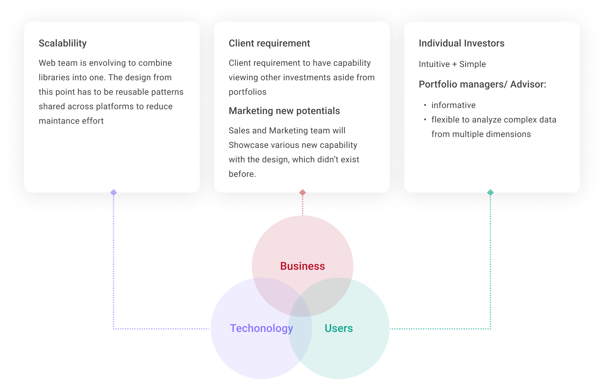
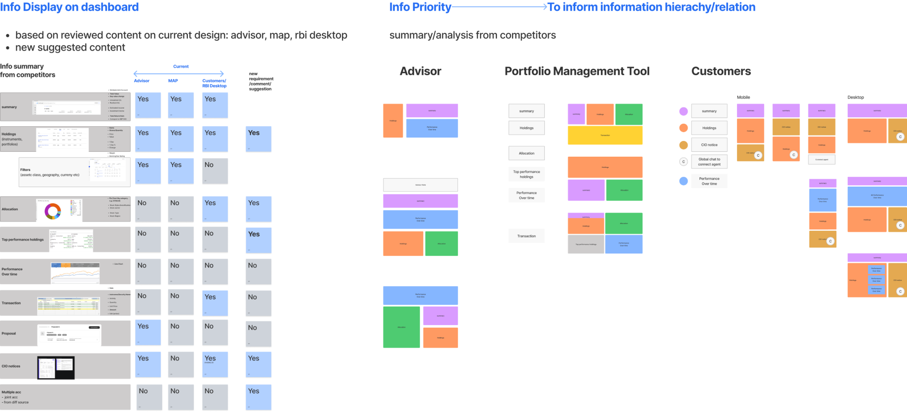
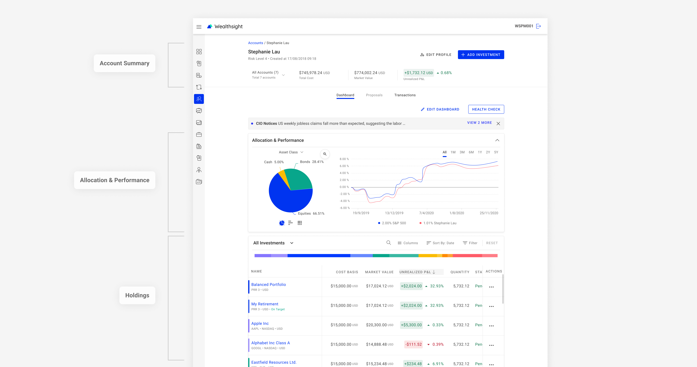
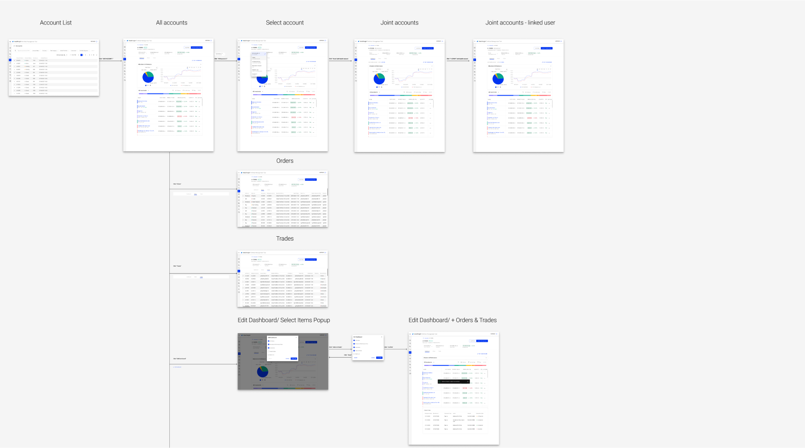
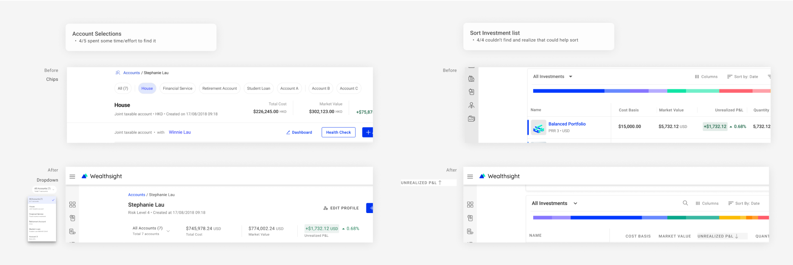
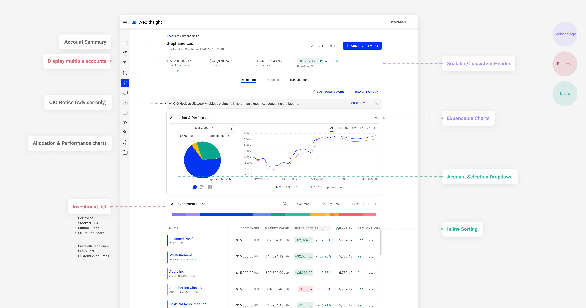

Intro
The user account dashboard is an interface module shared between 3 systems :
. . . . 🏦 Portfolio managers assess their investment performance on the page in the portfolio management system.
. . . . 👩💼 Financial advisors engage clients with their clients' portfolio allocations on the page in the financial advisor system.
. . . . 💁♀️ Individual investors can add or modify their personal investment portfolios on the page via white-labeledcustomer-facing applications (e.g.bank app).

1. Challenges & Opportunities

Multi-faceted requirements — business, clients & maintenance
// Incorporate multi-faceted requirements from clients, business value, user experience and technical strategy perspectives.
// Define a shared design pattern that fit into three different journeys: portfolio management tool, financial advisor and customers.
One pattern for customers & professionals
// It is challenging for three designers to agree on one design pattern. Because enterprise users and customers can have totally different goals and focus, this could lead to opposite designs. E.g. to show or hide certain features depends on the frequency of use.
Limited prior research
Because of the timeline to ship the feature to clients — and because some were concepts for a marketing pitch with no existing users asking for them — we had limited knowledge and resources to understand users' needs and mental models.
2. Translate research findings to design
audit products Workshop & Desktop research
With the design team, I launched desktop research and a workshop to extract the common modules that the customer, advisor and management tools all share. Based on the results, we were able to define what structure and modules to include in the first fold of the screen, and documented the differences between customer and investment-professional tools.

Common pattern: Account summary, allocation, performance, investment list

3. Solution & Prototype
Concept & Prototype

Responsive grid - desktop & tablet

4. Usability Testing
To make sure there were no basic usability problems within a short period of time, I ran a cognitive walkthrough with 5 colleagues to find out how easy it is for users to complete the pre-defined tasks with the concept design.

5. Refined Design
Create concept design and prototypes to validate our ideas.

6. Constraints & Alternative
Unable to define use scenarios without thorough analysis of first-hand data at an early stage --> what information to include?
--> Desktop research
Introduced new design patterns, might be hard to anticipate most technical issues that may need design update
--> Be open to design iterations
Not able to solidly validate design with real target users
--> cognitive walkthrough
7. Interactive Prototype
8. Future Market Expansion : Build Advisor Tool Starting From Dashboard
Create research plan to inform product roadmap
To expand the dashboard feature to financial advisors, I proposed a user research plan to better understand advisors' needs and pain points when managing clients' portfolios. The research will help us identify key features and functionalities that should be included in the advisor tool.